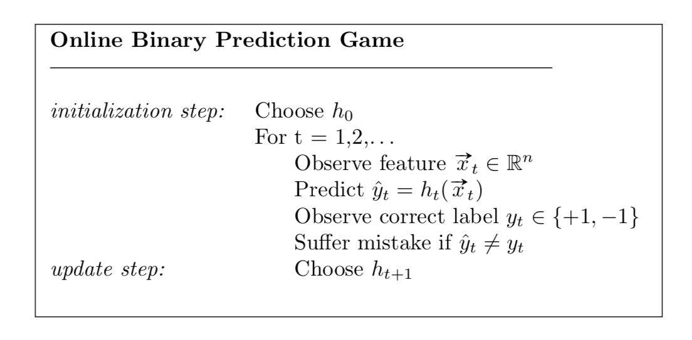
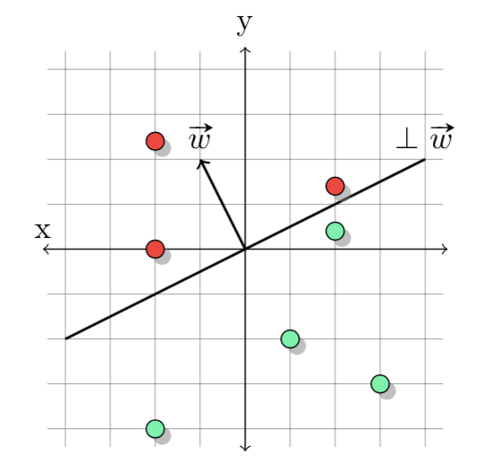
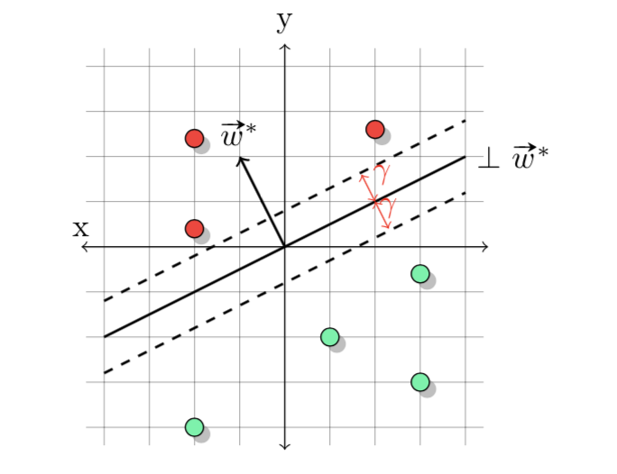

最近在学习online learning相关的东西，刚好总结一下。
Introduction to Online Learning
我们以在线二分类预测问题为例，比如说，日常生活中，我们根据气温、温度等特征来试试判断是否会下雪，这就是一个在线的二分类问题。
二分类分类器（二分类假设，binary classifier或者说binary hypothesis），将特征$\mathbf{x}\in\mathbb{R}^n$的特征映射到仅有两个元素的预测集中的函数
$$
h:\mathbb{R}^n\rightarrow{+1,-1}
$$
在线二分类预测问题指，利用每一阶段$t$的特征$\mathbf{x}_t$来预测$y_t$的情况，目标是最小化失败的次数。

需要注意的是，对于二分类预测问题：
- 定义在线预测算法的时候，必须明确初始步骤和更新步骤
- 在每次预测后会有即时的反馈
- 并没有随机性的假设，并不需要对$\mathbf{x}_t$的分布做假设
- 训练集和测试集之间并没有显著的不同
Mistake Bound Analysis
错误界的分析指的是对于一种算法最大犯错误数量的上届进行的分析。
例1：The Halving Algorithm，（翻译成半数算法？）是一种犯错数量有界的在线预测算法，它基于以下两种假设：
- 假设1：存在有限种假设，$\mathcal{H}$
- 假设2：存在完美的二分类器$h^\in\mathcal{H}$，使得$y_t=h^(x_t),\forall t$，称之为可实现假设
版本空间（Version Space）定义为，有限假设集合的子集，$V_t\subseteq \mathcal{H}$，其中每个属于该版本空间的假设都有$h(x_\tau)=y_\tau,\forall\tau\leq t,\forall h\in V_t$。简单来说，这个子集中的假设对观测的数据有一致的预测结果。
半数算法是在当前版本空间中进行投票得到预测值
$$
\hat{y}_t=\text{mode}{h_1(\mathbf{x}_t),h_2(\mathbf{x}_t),\cdots\forall h\in V_t}
$$
在更新的时候，根据新的观测值更新当前的版本空间。初始时候，版本空间为所有假设。所以我们可以得到半数算法的错误数量上界：
定理1：对于任何满足假设2的序列${\mathbf{x}t, y_t}{t=1}^\infty$，半数算法最多犯错$\log_2(|\mathcal{H}|)$次。
证明：
由于每次都是根据多数的选择进行的投票，所以每次更新的时候，都会有些错误的假设被从版本空间中移除，我们有：
$$
\begin{aligned}
h^*\in V_t & \Rightarrow &|V_t|\geq1,\forall t\
\hat{y}t\neq y_t & \Rightarrow & |V{t+1}|\leq\frac{1}{2}|V_t|
\end{aligned}
$$
其中第一个推断是指如果满足假设2，版本空间中假设至少有一个（完美假设），第二个推断是指，当前的半数算法做出错误的预测的时候，在更新版本空间的时候，会有超过半数的假设被移除当前版本空间（因为这超过半数的假设做出了错误的预测，所以被移除版本空间）。用$M_T$表示$T$次之后错误的数量，则有
$$
\begin{aligned}
1\leq |V_{T+1}|\leq (\frac{1}{2})^{M_T}|V_0|=(\frac{1}{2})^{M_T}|\mathcal{H|}\
M_T\leq \log_2(|\mathcal{H}|)
\end{aligned}
$$
根据上面的第二个推断做不断的放缩，即可得到如上不等式。$\Box$
例2：感知机算法（The Perceptron）
感知机算法想必大家都不陌生了，定义一个线性二分类器，$h_w$，和一组权重$\mathbf{w}\in\mathbb{R}^n$，则
$$
\hat{y}_t=h_w(\mathbf{x})=\text{sign}(\mathbf{w}\cdot\mathbf{x})=\text{sign}(\sum^n_ix_iw_i)
$$

上图中是二维下感知机算法的直观几何解释，其中划分正例与负例的超平面称之为垂直超平面（与权重向量$\mathbf{w}$垂直）。初始时候令$\mathbf{w}0=(0,\cdots,0)$，$\text{sign }0=1$，所以初始时候任意$\mathbf{x}$都有$\mathbf{w_0}\cdot\mathbf{x}=1$。更新时则为
$$
\mathbf{w}{t+1}=\begin{cases}
\mathbf{w}t & \text{if} & \hat{y}_t=y_t\
\mathbf{w}_t+y_t\mathbf{x}_t & \text{if} & \hat{y}_t\neq y_t\
\end{cases}
$$
当第$t$步时，有一个样本是正例$+1$被分为$-1$的时候，$\mathbf{w}_t\cdot\mathbf{x}<0$，所以我们需要迭代使得该样本与权重向量的内积增大（大于$0$的时候则分类正确）
$$
\begin{aligned}
\mathbf{w}{t+1}\cdot\mathbf{x}_t & = (\mathbf{w}_t+y_t\mathbf{x}_t)\cdot\mathbf{x}_t\
&=(\mathbf{w}_t+\mathbf{x}_t)\cdot\mathbf{x}_t\
&=\mathbf{w}_t\cdot\mathbf{x}_t + |\mathbf{x}_t|^2\
&\geq\mathbf{w}_t\cdot\mathbf{x}_t
\end{aligned}
$$
如果我们想定义感知机的错误数量上界，我们还需要两个假设：
- 假设3：特征向量的模长有限，$|\mathbf{x|\leq\rho}$
- 假设4：$\exist\mathbf{w}^\in\mathbb{R}^n$，$|\mathbf{w}^|\leq1$使得$y_t\mathbf{w}^*\cdot\mathbf{x}_t\geq\gamma>0$
值得注意的是，假设4与之前的假设2很相似，假设4实际上会比假设2要求更严格，当$\gamma=0$的时候，假设4与假设2等价。$\gamma$被称为间隔（margin）

定理2：对于任何满足假设3和假设4的序列${\mathbf{x}t, y_t}{t=1}^\infty$，感知机分类器犯错误数量最多为$(\frac{\rho}{\gamma})^2$
证明：
在每次犯错后，我们的可以发现$\mathbf{w}t$与$\mathbf{w}^$的共线性（通过计算$\mathbf{w}_t\cdot\mathbf{w}^$）越来越强。根据迭代过程，我们有
$$
\begin{aligned}
\hat{y}_t\neq y_t & \Rightarrow \mathbf{w}{t+1}=\mathbf{w}{t}+y_t\mathbf{x}{t}\
\mathbf{w}{t+1}\cdot\mathbf{w}^*
&=(\mathbf{w}{t}+y_t\mathbf{x}{t})\cdot\mathbf{w}^*\
&=\mathbf{w}{t}\cdot\mathbf{w}^+y_t\mathbf{x}{t}\cdot\mathbf{w}{t}\
&\geq \mathbf{w}_{t}\cdot\mathbf{w}^+\gamma
\end{aligned}
$$
上述第一个等式为犯错之后权重$\mathbf{w}t$的迭代式，第二个为迭代后会增加$\mathbf{w}_t$与$\mathbf{w}^*$的共线性。上述步骤会每次迭代时候重复，当感知机算法不犯错误的时候，$\mathbf{w}{t+1}\cdot\mathbf{w}^=\mathbf{w}_{t}\cdot\mathbf{w}^$。重复上述过程$T$次，则
$$
\mathbf{w}{T+1}\cdot\mathbf{w}^*\geq \mathbf{w}{0}\cdot\mathbf{x}0+M_T\gamma\geq M_T\gamma
$$
由于模长的影响，有可能内积变大的时候，$\mathbf{w}_t$与$\mathbf{w}^*$的共线性没有增加，所以我们根据假设3来约束这种增长
$$
\hat{y}_t\neq y_t \Rightarrow |\mathbf{w}{t+1}|^2=|\mathbf{w}{t}+y_t\mathbf{x}{t}|^2
$$
在犯错$M_T$次后
$$
|\mathbf{w}{t+1}|^2=|\mathbf{w}_0+\sum^{M_T}_\tau y_\tau\mathbf{x}_\tau|^2\leq|0+M_T\rho||
$$
经过简单的组合后就有
$$
M_T\gamma\leq
\mathbf{w}{T+1}\cdot\mathbf{w}^\leq
|\mathbf{w}_{T+1}||\mathbf{w}^|=
|\mathbf{w}_{T+1}|\cdot 1\leq
\sqrt{M_T}\rho
$$
得
$$
M_T\gamma\leq\sqrt{M_T}\rho\Rightarrow M_T\leq(\frac{\rho}{\gamma})^2
$$
证毕。$\Box$
注意感知机的错误上界并不依赖于次数$T$，因此该不等式对于任意$T$都成立。
注：本篇文章很依赖于可实现假设，但现实情况中可实现假设往往是不存在的。